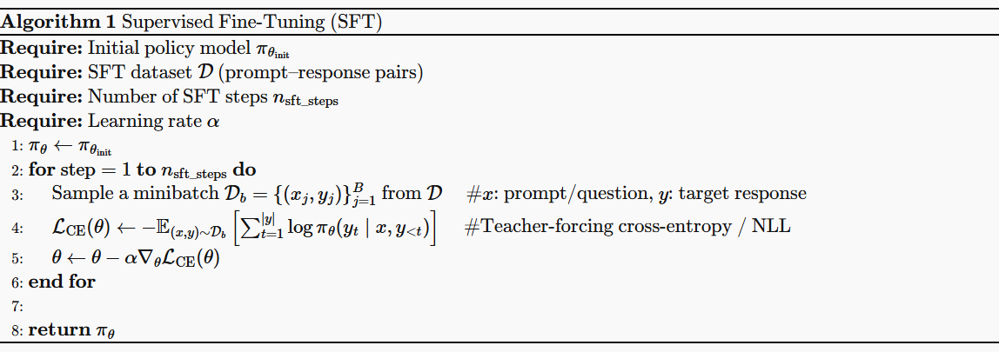
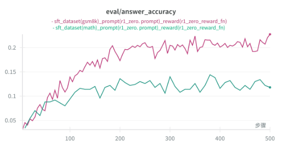
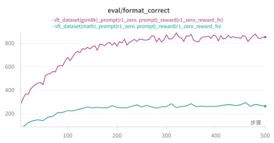
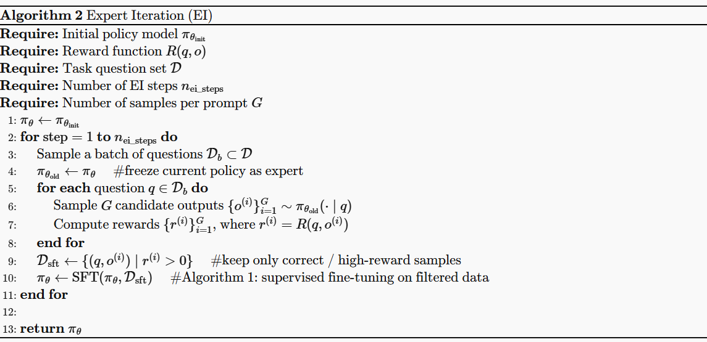
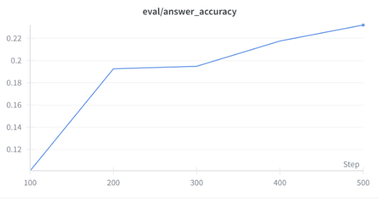
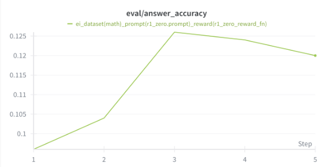
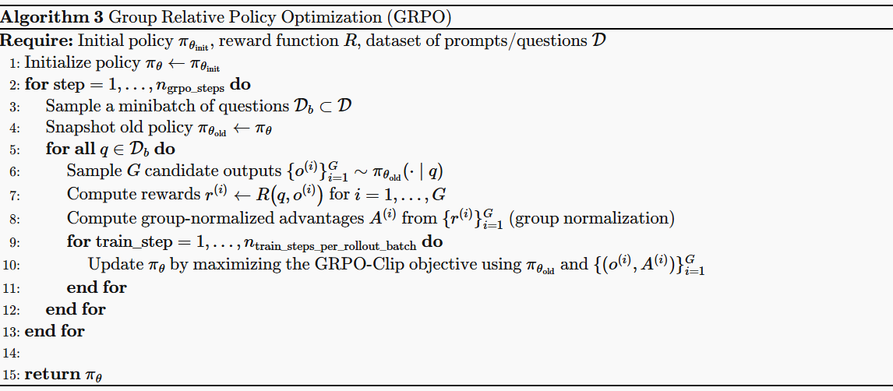
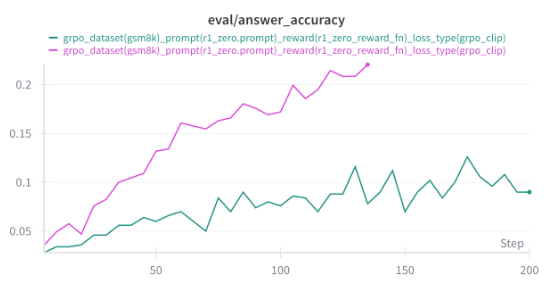
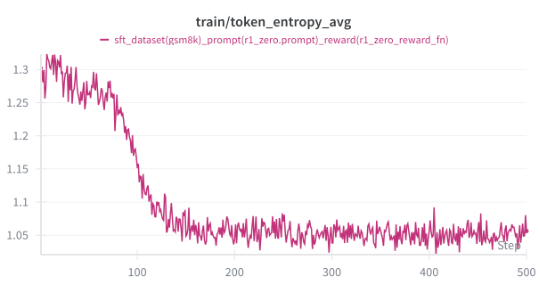

SFT, Expert Iteration & GRPO
Assignment 05: LLM Alignment: SFT, Expert Iteration, GRPO
在Assignment 05 我们将会实现SFT， Expert Iteration以及GRPO算法，对Qwen2.5-Math-1.5B模型进行微调，以提升其在MATH数据集上的表现。通过这些算法的实现，我们将深入理解LLM的对齐方法，并掌握如何应用这些技术来改进大型语言模型的性能。
1 Dataset Preparation & Model Download
只需运行以下命令，We are ready to GO!！
下载代码1
2https://github.com/emopps/cs336.git
cd Stanford-CS336/assignment5-alignment
安装依赖，下载数据集和模型1
2
3
4
5
6
7
8
9pip install uv
uv sync --no-install-package flash-attn
uv sync
source .venv/bin/activate
python download_model.py \
--repo-id Qwen/Qwen2.5-Math-1.5B \
--save-dir models/Qwen2.5-Math-1.5B \
--method snapshot --no-symlinks --verify
我们先来下载模型权重，只需一个命令：1
2
3
4python download_model.py \
--repo-id Qwen/Qwen2.5-Math-1.5B \
--save-dir models/Qwen2.5-Math-1.5B \
--method snapshot --no-symlinks --verify
通过上面的命令，我们就可以把 Qwen2.5-Math-1.5B 模型下载到 models/Qwen2.5-Math-1.5B 目录下。
在这个 Assignment 中，我们将会用到 Math Dataset。不过由于版权问题，Assignment 中并没有提供完整的数据，因此我们需要自行下载数据集。在这个 Assignment 中，我们主要会用到以下两个数据集：
- GSM8K Dataset：一个包含 8,500 多个高中水平数学问题的数据集，专注于逐步推理和解决方案生成。（该数据集在 Assignment 中已经提供在 data/gsm8k）
- MATH Dataset：这个数据集包含 12,500 多个高中和大学水平的数学问题，涵盖多个主题和难度级别 Link。
我们现在下载 MATH：1
2
3
4
5hf download nlile/hendrycks-MATH-benchmark \
--repo-type dataset \
--local-dir ./data/hendrycks-MATH-benchmark
mv ./data/hendrycks-MATH-benchmark ./data/math
接下来，我们来预处理一下这些数据集，因为不同的数据集格式不一样，我们需要把他们处理成统一的格式，以便我们后续的训练。先来看 GSM8K 数据集的格式：
1 | { |
每个样本包含 question 和 answer 两个字段，我们需要把他们处理成 prompt 和 cot 的格式，并且提取出里面的答案：
1 | # assignment5-alignment/cs336_alignment/dataset_utils/gsm8k.py |
在预处理之后，我们会把数据集处理成下面的格式：1
2
3
4
5{
"question": "Natalia sold clips to 48 of her friends in April, and then she sold half as many clips in May. How many clips did Natalia sell altogether in April and May?",
"cot": "Natalia sold 48/2 = <<48/2=24>>24 clips in May.\nNatalia sold 48+24 = <<48+24=72>>72 clips altogether in April and May.\n</think> <answer>72</answer>",
"answer": "72"
}
类似地，我们也需要对 MATH 数据集进行预处理，MATH 数据集的格式如下：1
2
3
4
5{
"problem": "How many vertical asymptotes does the graph of $y=\\frac{2}{x^2+x-6}$ have?",
"solution": "The denominator of the rational function factors into $x^2+x-6=(x-2)(x+3)$. Since the numerator is always nonzero, there is a vertical asymptote whenever the denominator is $0$, which occurs for $x = 2$ and $x = -3$. Therefore, the graph has $\\boxed{2}$ vertical asymptotes.",
"answer": "2"
}
1 | # assignment5-alignment/cs336_alignment/dataset_utils/math.py |
在处理之后，我们会把 MATH 数据集处理成下面的格式：1
2
3
4
5{
"question": "How many vertical asymptotes does the graph of $y=\\frac{2}{x^2+x-6}$ have?",
"cot": "The denominator of the rational function factors into $x^2+x-6=(x-2)(x+3)$. Since the numerator is always nonzero, there is a vertical asymptote whenever the denominator is $0$, which occurs for $x = 2$ and $x = -3$. Therefore, the graph has $\\boxed{2}$ vertical asymptotes.\n</think> <answer>2</answer>",
"answer": "2"
}
具体的细节，看 assignment5-alignment/cs336_alignment/dataset_utils 文件夹下的代码，以及 assignment5-alignment/preprocess.py 这个脚本。在这里就不赘述了。处理完之后，我们会有：
1 | data/ |
2 Zero-Shot Evaluation & vLLM
2.1 vLLM
在这个 Assignment 中，我们会使用 vLLM 来进行模型的推理，以便我们可以更快地进行评估和训练。以下几个核心函数：
1 | # assignment5-alignment/cs336_alignment/vllm_utils.py |
当我们需要使用 vLLM 进行推理时，我们只需要先初始化 vLLM 实例，之后把模型权重 load 进去，最后调用 generate_responses 函数即可完成推理：
1 | vllm = init_vllm( |
接下来，我们先来评估一下 Qwen2.5-Math-1.5B 在 MATH 和 GSM8K 数据集上的表现。具体的评估代码在 assignment5-alignment/eval.py 以及 assignment5-alignment/cs336_alignment/eval.py，运行下面的命令即可：
1 | python eval.py |
来看一下评估结果：
| dataset_path | total | answer_correct | format_correct | reward_1 | formatted_but_answer_wrong | answer_accuracy |
|---|---|---|---|---|---|---|
| math/train.jsonl | 12000 | 359 | 2038 | 359 | 1679 | 0.029 |
| math/test.jsonl | 500 | 13 | 77 | 13 | 64 | 0.026 |
| gsm8k/train.jsonl | 7473 | 232 | 1433 | 232 | 1201 | 0.031 |
| gsm8k/test.jsonl | 1319 | 41 | 258 | 41 | 217 | 0.031 |
Table 1: Qwen2.5-Math-1.5B Zero-Shot Evaluation Results on MATH and GSM8K Datasets
可以看到，在 Zero-Shot 的情况下，Qwen2.5-Math-1.5B 在 MATH 和 GSM8K 数据集上的表现都非常差，只有大约 2.6% 到 3.1% 的准确率。这也符合预期，因为 Qwen2.5-Math-1.5B 虽然是一个强大的语言模型，但在没有经过专门微调的情况下，其在复杂数学问题上的表现仍然有限。
3 Supervised Fine Tuning
首先第一个算法就是 Supervised Fine Tuning (SFT)。在 Alignment 训练里，SFT 往往被看作“第一阶段”：用人工标注的高质量数据，把 base model 从“会说话”推到“更像助理、更会按指令做事”。在 Post-Training 中主要起到一个 warm-start 的作用，为之后的 Reinforcement Learning 算法做一个铺垫，主要目的有：
Warm-start：让模型先变“像助理”
base model 可能会乱格式、跑题、答非所问。SFT 直接用示范数据教它：看到 prompt 该怎么组织输出、该不该写推理、怎么写、最终答案要放到哪里。这会显著提高 format_correctness / instruction following，也是评估表里最先能被拉起来的指标。稳定、样本效率高（比 RL 好训）
SFT 就是最大似然/交叉熵，训练目标明确、梯度稳定、收敛更可控：不需要 reward model，不需要 rollout、优势估计、clip/KL 等一堆超参；同样计算量下，通常比 RL 更“省事、省算力”。学会“正确的输出分布”，减少 RL 的探索难度
RL 只给“好/不好”的信号（甚至只有最终对错），如果模型一开始输出很乱，RL 会非常难学、方差很大。SFT 先把策略带到一个合理区域，RL 才更容易在此基础上做提升（例如提升正确率、减少啰嗦、对齐偏好）。用 response_mask 只优化回答，不逼模型“背 prompt”
写好的 response_mask 很关键：SFT 把 prompt 当条件，只在 response token 上算 loss：避免模型花 capacity 去重建 prompt，训练信号更聚焦在“该怎么回答”，这在长 prompt/长上下文时特别重要。提供“行为先验”，防止 RL 训练崩坏
在 PPO/GRPO 里经常会担心 reward hacking、模式坍塌、输出退化。SFT 提供一个强先验：即使 RL 更新过猛，KL/参考模型通常也把它拉回 SFT 附近，让训练更稳。
SFT 的算法如下：

其实，SFT 可以视作一个 Imitation Learning，其过程就是：
- 给定一个 Prompt ，以及一个对应的 Response 。
- 将 Prompt 传入模型，我们希望模型可以根据这个 Prompt，来生成出与对应 Response 一样的回答。
这个也就是用过 Maximize Likelihood 来学习，也就是最小化 Loss Function，在这个情景中，也就是 Cross Entropy Loss：
接下来，先定义一些辅助函数完成这一系列：
3.1 Tokenize Prompt and Output
首先我们要定义的第一个函数就是 tokenize_prompt_and_output()，它的作用是接收一系列的 prompts 和 Response，并且 tokenize 它们，返回它们的 ids。需要注意的一点是，我们要同时返回 Response Mask。先来看看这个Response Mask的作用是什么：
假设我们有一个 和 ，将它们并在一起，得到函数 。将整段传入 Model，在没有 Response Mask 的情况下，模型会对所有 token 计算 loss，这样模型就会被迫去预测：
- prompt 里的下一个 token（本质是在“复述/重建 prompt”）
- output 里的 token（这才是我们真正关心的）
但是在 SFT 训练阶段，prompt 是输入条件，我们并不希望优化模型去“背 prompt 的分布”，只希望它在给定 prompt 后生成正确输出。所以用 response_mask 把 loss 限定在 output token 上：训练信号只来自回答部分。
当然，除此之外，Response Mask 还对应着 pad tokens。举个直观的例子：
假设输入是：
- q: “2+2=?”
- o: “4”
拼接后 token 序列是：[q_tokens][o_tokens][pad…]
response_mask 会像这样：
- q_tokens → False False False …
- o_tokens → True True …
- pad → False False …
1 | Tokens: [ 2 , + , 2 , = , ? , 4 , <pad> , <pad> ] |
结果：loss 只在“4”的 token 上算，prompt 部分完全不参与。
我们来看看代码是怎么实现的：
首先第一步自然是 Tokenize Prompts 和 Response：
1 | # assignment5-alignment/cs336_alignment/alg/utils.py |
注意！在这里，我们并不会返回 Tensor，返回的是 List，并且 List 里面每个元素的长度是不一样的。
接下来，我们把这两个 List 中的内容 concat 在一起，得到 [q, o]，并且计算出我们的 Response Mask：
1 | # assignment5-alignment/cs336_alignment/alg/utils.py |
到目前为止，input_ids 和 response_mask 里面的内容长度不一样长，所以我们要将它 Pad 到同样的长度，这样才可以传入模型：
1 | # assignment5-alignment/cs336_alignment/alg/utils.py |
接下来就是我们的 full 和 labels，labels 中记录的是 input_ids 中的下一个 token：
1 | # assignment5-alignment/cs336_alignment/alg/utils.py |
需要注意的是，Response Mask 是 labels 中的 mask，而不是 input_ids 中的 mask。
在这里函数中，我们主要做两件事情：
1、Tokenize Prompt 和 Output，这里的Prompt是我们添加了Template之后
2、Concat Tokenized Prompt， Output一起，并且生成Response Mask
3、Padding到相同的长度
4、将Concat之后的内容移一位，得到inputs和labels
3.2 Per Token Entropy
对于每一个位置 ，模型会给出下一个 token 的分布，也就是 ，Entropy 定义为：
- Entropy 高：分布更“平”，模型不那么确定（探索更强）。对于 Category Distribution， 有最高的 Entropy。
- Entropy 低：分布更“尖”，模型更确定（可能变得过度自信、模式坍塌 (model collapse)）。
在 RL 里如果你看到 entropy 很快掉到很低，常见含义是：
- 策略变得太确定（exploration 变差）
- 训练可能开始“钻 reward 漏洞”或输出单一模板
- 学习可能不稳定（尤其和 KL/clip 配合不当时）
计算 entropy 也很简单：
用上面的公式，我们可以定义一个函数 compute_entropy 来计算 entropy：
1 | # assignment5-alignment/cs336_alignment/alg/utils.py |
3.3 Getting Log Probs from Model
接下来，我们来定义另一个辅助函数 get_response_log_probs，它的作用是：把模型对每个位置真实 token 的条件概率“算出来”（以 log 形式），并按 token 粒度返回。
我们知道，SFT 的 Loss 中需要用到 ，也就是模型在位置 上，对真实 token 的 log prob。因此，我们需要定义一个函数来计算这个值：
1 | # assignment5-alignment/cs336_alignment/alg/utils.py |
对于模型输出 ，其输出的是 Logits，也就是没有 normalized 的分布，我们第一步自然是利用 softmax 将其变为分布，之后我们再根据我们需要的 label，作为索引，来提取出我们需要的 log-probs。
1 | # assignment5-alignment/cs336_alignment/algs/utils.py |
这个函数最关键的部分就是第 10 行，通过 gather 函数，我们可以根据 labels，来提取出我们需要的 log_probs。logp 的 shape 是 ，其中 B 是 Batch Size，T 是 Sequence Length，V 是 Vocabulary Size，而 labels 的 shape 是 ，因此通过 gather 函数，我们可以得到每个位置上真实 token 的 log_probs，最终得到的 log_probs shape 是 ，也就是我们想要的结果。
⚠️ WARNING: About Response Mask
我们在这一步，并没用到 Response Mask，也就是说，这个函数会返回所有位置的 Log Probs，包括 Prompt 部分和 Pad 部分。我们需要在之后的 Loss 计算中 masked_normalize，使用 Response Mask 来 Mask 掉 Prompt 和 Pad 部分。
因此，在 SFT 中，Log Probs 我们通过 log_probs.sum(dim=-1) 可以计算出 Loss，当然，在做这个计算之前，我们还需要 Mask 掉 Prompts，我们接下来去实现它。
3.4 Masked Normalize
接下来，我们来实现 masked_normalize 函数，这个函数的作用是：根据 Mask，对 Tensor 进行 Mask，并且进行 Normalize：
1 | # assignment5-alignment/cs336_alignment/alg/utils.py |
这个函数很简单，首先我们会根据 Mask 来 Mask 掉 Tensor 中不需要的部分，之后我们会对剩下的部分进行 Sum，最后我们会根据 normalize_constant 来进行 Normalize。传入 masked_normalize 的 tensor，一般是 Log Probs，这样我们就可以计算出 Masked Log Probs 的和，也就是我们想要的 Loss。其中一个很巧妙的设计是 normalize_constant 和 dim 参数，通过这两个参数，我们可以灵活的控制我们想要的 Normalize 方式，以及想要 Sum 的维度，比如：
- 如果我们想要计算 Batch 中所有 Token 的 Loss，我们可以传入 dim=None，并且 normalize_constant = mask.sum()，这样我们就可以得到 Batch 中所有 Token 的平均 Loss。（Token Level Loss）
- 如果我们想要计算 Batch 中每个 Sequence 的 Loss，我们可以传入 dim=-1，并且 normalize_constant = mask.sum(dim = -1)，这样我们就可以得到 Batch 中每个 Sequence 的 Loss。（Sequence Level Loss）
3.5 SFT Micro-batch Training Step
有了这些 Helper Functions，我们可以来实现 SFT 的训练。由于 Qwen2.5-Math-1.5B 的模型比较大，我们不能完全实现 Batch Size 较大的，因此，我们需要通过 Gradient Accumulation 的技术，来使得训练变得可能，我们先来定义一小步：
1 | # assignment5-alignment/cs336_alignment/alg/sft.py |
其实很简单，这个函数就做两件事情：
- 计算 Loss
- Backward 计算 Gradient
其中 表示的是 Mask 值。
1 | # assignment5-alignment/cs336_alignment/alg/sft.py |
Gradient Accumulation 的实现也很简单，我们只需要在计算 Loss 之后，除以 gradient_accumulation_steps 即可。这样我们就可以在之后的 SFT Trainer 中，实现 Gradient Accumulation 的功能。
3.6 SFT Trainer
有了这些辅助函数，我们就可以定义我们的 SFT Trainer 了，相当的直观：
1 | # assignment5-alignment/cs336_alignment/alg/sft.py |
在这里就不过多的赘述了，有需要的同学请自行查看代码 assignment5-alignment/cs336_alignment/alg/sft.py 以及它的训练代码 assignment5-alignment/train_sft.py。
3.7 SFT Experiment
接下来我们来看看 SFT 的训练结果：


可以看到，经过 SFT 训练之后，模型在 MATH、GSM8K 数据集上的表现都有了显著的提升，尤其是在 Format Reward 上，提升非常明显，这也符合我们之前提到的 SFT 的作用，让模型变得更像助理，更会按指令做事。并且 Accuracy 也有了显著的提升，这也说明 SFT 在提升模型能力方面是有效的。
4 Expert Iteration

Expert Iteration 在 SFT 的基础上，多了几步采样的步骤。通过这几个步骤，我们可以得到更多的 Prompt-Response Pairs，以便更好地训练 SFT。同时，里面的 Functions 也可以在 GRPO 中复用，可以看作是为 GRPO 做好准备。
在这里，采样的时候，我们会先重复 prompts 和 answers，以便对每个 prompt 采样多个 response：
1 | # assignment5-alignment/cs336_alignment/alg/ei.py |
有了 prompts 和 answers 之后，我们就可以进行采样了，采样的代码和之前的 vLLM 推理代码是一样的：
1 | # assignment5-alignment/cs336_alignment/alg/ei.py |
之后我们就可以计算 Reward，以及过滤出高质量的 Prompt-Response Pairs，以便进行 SFT 训练：
1 | # assignment5-alignment/cs336_alignment/alg/ei.py |
具体的细节，大家可以查看代码 assignment5-alignment/cs336_alignment/alg/ei.py 以及它的训练代码 assignment5-alignment/train_ei.py。
4.1 EI Experiment
接下来我们来看看 EI 的训练结果：


可以看到，经过 EI 训练之后，模型在 MATH、GSM8K 数据集上的表现都有了显著的提升，尤其是在 Accuracy 上，提升非常明显。这也符合我们之前提到的 EI 的作用：通过采样更多的 Prompt-Response Pairs，来提升模型的能力。并且 Format Reward 也有了显著的提升，这也说明 EI 在提升模型能力方面是有效的。
5 GRPO
经过前两轮的热身，终于到了我们本次 Assignment 的重头戏：GRPO。GRPO 的算法如下：

在实现代码之前，我们先来看看 GRPO 的几个关键步骤：
- 采样：和 EI 类似，我们需要对每个 prompt 采样多个 response，以便计算 reward。
- 计算 Reward：我们需要计算每个 response 的 reward，以便进行后续的优化。
- 计算 Log Probs：我们需要计算每个 response 的 log probs，包括 Old Policy 和 New Policy 的 log probs。
- 计算 Advantage：我们需要计算每个 response 的 advantage。
- 计算 Loss：我们需要计算 GRPO 的 Loss，并且进行 Backward。
- 更新 Old Policy：我们需要在每个 Step 结束后，更新 Old Policy 为当前的 New Policy。
我们一步一步来看。首先是采样和计算 Reward，这部分和 EI 是一样的，我这里采用的方法，也是先重复 prompts 和 answers，以便对每个 prompt 采样多个 response：
1 | # assignment5-alignment/cs336_alignment/alg/grpo.py |
有了采样的 responses 之后，我们就可以计算 reward：
1 | # assignment5-alignment/cs336_alignment/alg/grpo.py |
在这个函数中，我们计算了每个 response 的 reward，之后我们根据 group size，来计算 group normalized advantages。具体来说，我们会将每个 group 中的 rewards，计算 mean 和 std，之后我们会根据 mean 和 std 来计算 normalized rewards，也就是 advantages。这样做的好处是，可以减少不同 group 之间的 reward scale 差异，使得训练更加稳定。
有了 advantages 之后，我们就可以计算 log probs 了：
1 | # assignment5-alignment/cs336_alignment/alg/grpo.py |
在这里，我也用了类似于 Gradient Accumulation 的技术，来计算 Old Policy 的 log probs，以便节省显存。New Policy 的 log probs 也是类似的，这里就不赘述了。
有了 Old Policy 和 New Policy 的 log probs 之后，我们就可以计算 GRPO 的 Loss 了：
1 | # assignment5-alignment/cs336_alignment/alg/grpo.py |
在这个函数中，我们计算了 GRPO 的 Loss。具体来说，我们会根据传入的 loss_type 来计算不同类型的 Loss。之后我们会根据 Response Mask 来 Mask 掉不需要的部分，最后我们会进行 Backward。最后，在每个 Step 结束后，我们需要更新 Old Policy 为当前的 New Policy，这部分代码也很简单，直接赋值即可。
其实熟悉了 GRPO 的算法之后，再回头看这个算法实现，你会发现，GRPO 的实现其实并不复杂，主要是把之前 SFT 和 EI 里的一些关键步骤复用，以及增加了一些新的功能，比如计算 Advantage，以及计算不同类型的 Loss。只要理解了这些关键步骤，实现起来并不难。
5.1 GRPO Experiment
接下来我们来看看 GRPO 的训练结果：


可以看到，经过 GRPO 训练之后，模型在 GSM8K 数据集上的表现有了显著的提升，尤其是在 Accuracy 上，提升非常明显。这也符合我们之前提到的 GRPO 的作用：通过采样更多的 Prompt-Response Pairs，来提升模型的能力。并且 Token Entropy 也有了显著的下降，这也说明模型变得更加确定，更加自信。
5.2 Other Experiments
在 Assignment 中，我还实现了一些其他的实验，比如不同的 Reward Function，不同的 Loss Type，以及不同的 Group Size。由于时间关系，我并没有做这些实验，不过在代码中，可以很容易的实现这些实验。
5.2.1 Learning Rate Tuning
首先第一个实验就是学习率的调节。由于 GRPO 的训练比较不稳定，因此学习率的选择非常重要。我尝试了不同的学习率，发现 3e-6 是一个比较合适的选择，过高的学习率会导致训练不稳定，过低的学习率会导致训练收敛慢。
5.2.2 Effect of Baseline
Baseline 的作用是减少训练的方差，因此我尝试了不同的 Baseline，发现使用 Baseline 可以显著提升训练的稳定性，并且可以提升模型的性能。
5.2.3 Length Normalization
在计算 Log Probs 的时候，使用不同的 Length Normalization 方式，也会对训练产生影响。我尝试了不同的 Normalization 方式，发现使用 Ken Length Normalization 可以提升模型的性能。
5.2.4 Normalization with group std
在计算 Advantage 的时候，我尝试是否使用 group std 来进行 Normalization，发现使用 group std 来进行 Normalization，可以显著提升训练的稳定性，并且可以提升模型的性能。
5.2.5 Old Policy Clipping
在 GRPO 中，我们使用的是 PPO 的方式，也就是使用 Old Policy 来进行 Clip，然后使用 New Policy 来进行优化。这种方式可以提升训练的稳定性，并且可以提升模型的性能。
5.2.6 Different Prompts
当然，我们还可以尝试不同的 Prompts，以便提升模型的性能。不同的 Function 也会对模型的性能产生影响，因此选择合适的 Prompts 是非常重要的。